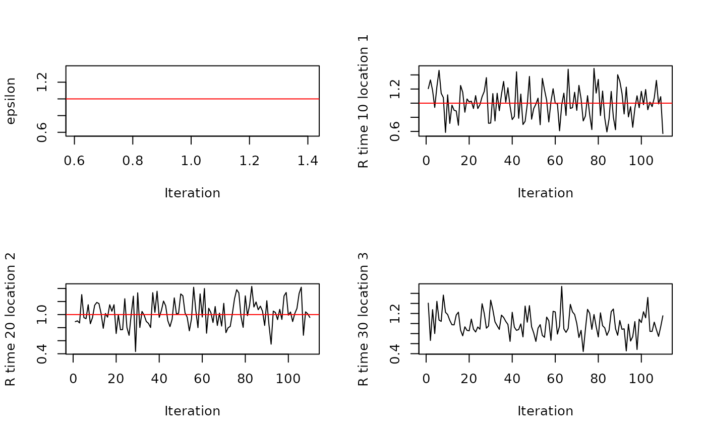

Jointly estimate the instantaneous reproduction number for a reference pathogen/strain/variant and the relative transmissibility of a "new" pathogen/strain/variant.
Usage
estimate_advantage(
incid,
si_distr,
priors = default_priors(),
mcmc_control = default_mcmc_controls(),
t_min = NULL,
t_max = nrow(incid),
seed = NULL,
incid_imported = NULL,
precompute = TRUE,
reorder_incid = TRUE
)Arguments
- incid
a multidimensional array containing values of the incidence for each time step (1st dimension), location (2nd dimension) and pathogen/strain/variant (3rd dimension)
- si_distr
a matrix with two columns, each containing the probability mass function for the discrete serial interval for each of the two pathogen/strain/variants, starting with the probability mass function for day 0 in the first row, which should be 0. Each column in the matrix should sum to 1.
- priors
a list of prior parameters (shape and scale of a gamma distribution) for epsilon and R; can be obtained from the function
default_priors(). The prior for R is assumed to be the same for all time steps and all locations- mcmc_control
a list of default MCMC control parameters, obtained by default from
default_mcmc_controls()- t_min
an integer > 1 giving the minimum time step to consider in the estimation. If
NULL,t_minis calculated using the functioncompute_si_cutoff()which gets the maximum (across all variants) of the 95th percentile of the SI distribution.- t_max
an integer >
t_minand <=nrow(incid)giving the maximum time step to consider in the estimation. Default value isnrow(incid).- seed
a numeric value used to fix the random seed
- incid_imported
an optional multidimensional array containing values of the incidence of imported cases for each time step (1st dimension), location (2nd dimension) and pathogen/strain/variant (3rd dimension).
incid - incid_importedis therefore the incidence of locally infected cases. Ifincid_importedisNULLthis means there are no known imported cases and all cases other than on those from the first time step will be considered locally infected.- precompute
a boolean (defaulting to
TRUE) deciding whether to precompute quantities or not. UsingTRUEwill make the algorithm faster- reorder_incid
a boolean (defaulting to
TRUE) deciding whether the incidence array can be internally reordered during the estimation of the transmission advantage. IfTRUE, the most transmissible pathogen/strain/variant is temporarily assigned to[, , 1]of the incidence array. We recommend the default value ofTRUEas we find this to stabilise inference.
Value
A list with the following elements:
epsilon: a matrix containing the MCMC chain (thinned and after burnin) for the relative transmissibility of the "new" pathogen/strain/variant(s) compared to the reference. Each row corresponds to a "new" pathogen/strain/variant and each column to an MCMC iteration.R: an array containing the MCMC chain (thinned and after burnin) for the reproduction number for the reference pathogen/strain/variant. Dimensions of the array are time, location, and iteration of the MCMC.convergence: a logical vector based on the Gelman-Rubin convergence diagnostic. Each element inconvergenceisTRUEwhen the MCMC for the corresponding epsilon has converged number of iterations specified (otherwiseFALSE).diag: a nested list of the point estimate and upper confidence limits of the Gelman-Rubin convergence diagnostics (as implemented in coda). The length ofdiagis equal to the number of rows in epsilon. Each element oddiagis a list of length 2 where the first element is calledpsrfand is a named list of the point estimate and upper confidence limits. The second element isNULLand can be ignored.
Examples
n_v <- 2
n_loc <- 3 # 3 locations
T <- 100 # 100 time steps
priors <- default_priors()
# constant incidence 10 per day everywhere
incid <- array(10, dim = c(T, n_loc, n_v))
# arbitrary serial interval, same for both variants
w_v <- c(0, 0.2, 0.5, 0.3)
si_distr <- cbind(w_v, w_v)
# Dummy initial values for the MCMC
R_init <- matrix(5, nrow = T, ncol = n_loc)
R_init[1, ] <- NA # no estimates of R on first time step
epsilon_init <- 5
x <- estimate_advantage(incid, si_distr, priors)
# Plotting to check outputs
par(mfrow = c(2, 2))
plot(x$epsilon, type = "l",
xlab = "Iteration", ylab = "epsilon")
# Compare with what we expect with constant incidence in all locations
abline(h = 1, col = "red")
plot(x$R[10, 1, ], type = "l",
xlab = "Iteration", ylab = "R time 10 location 1")
abline(h = 1, col = "red")
plot(x$R[20, 2, ], type = "l",
xlab = "Iteration", ylab = "R time 20 location 2")
abline(h = 1, col = "red")
plot(x$R[30, 3, ], type = "l",
xlab = "Iteration", ylab = "R time 30 location 3")
